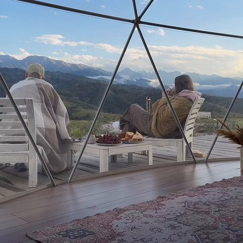
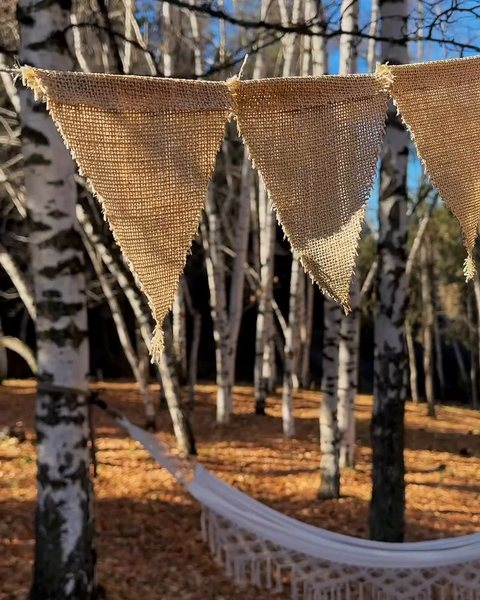

Алиса Макаренко
Видеограф · Visual Content Creator
Алматы, Казахстан





О себе
Снимаю спокойное атмосферное видео: места, лайфстайл, природу и предметы. Работаю на iPhone, монтирую и делаю цветокоррекцию сама. С 2023 года продюсирую и веду YouTube-шоу «Ведьмин час». Открыта к коммерческим съёмкам для брендов и пространств, UGC и SMM-контенту.
Что снимаю
- Hospitality & Tourism — глэмпинги, A-frame-домики, отели, базы отдыха
- Lifestyle & Places — кафе, рестораны, кофейни, SPA, студии
- Brands & Products — небольшие бренды, косметика, предметы интерьера
Опыт
Личная съёмка, Алматы
Видеограф и visual content creatorЛичное портфолио
- Снимаю природу, пространства, лайфстайл, животных и предметы; выкладываю короткие ролики в Instagram (@alissayeya).
- Весь цикл сама: съёмка на iPhone, монтаж в DaVinci Resolve и CapCut, цветокоррекция.
- Сняла предметный ролик для шоу «Ведьмин час».
«Ведьмин час» — YouTube-шоу и подкаст
Продюсер, сценарист и соведущаяДекабрь 2023 — сейчас
- Делаю превью и обложки выпусков в едином визуальном стиле.
- Делаю Shorts: 13 роликов канала набрали 4,55 млн просмотров — около 92 % всех просмотров на YouTube.
- Организую запись — свет, звук, камеру; видео монтируем вместе с соведущей.
Навыки · Техника и программы · Ссылки
Навыки
Съёмка на iPhone · Композиция и кадр · Естественный свет · Монтаж · Цветокоррекция · Reels, Shorts, TikTok · Предметная съёмка
Техника и программы
iPhone, DaVinci Resolve, CapCut, Lightroom, Photoshop
Ссылки
- Портфолио видеографа: boozybatsmain.github.io/alisa-makarenko/video
- Портфолио продюсера: boozybatsmain.github.io/alisa-makarenko